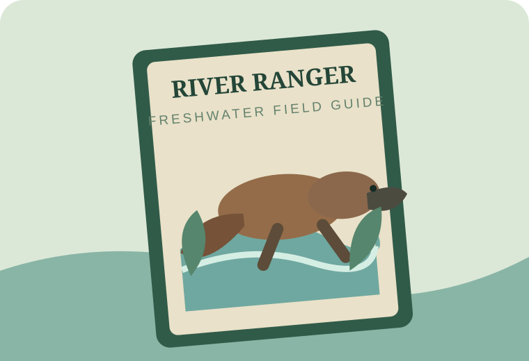
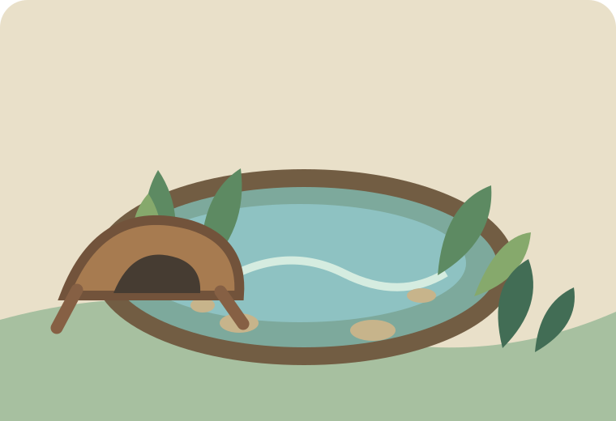

Puddle Explorer Kits
A starter set with a pocket field notebook, magnifying glass, pencil, and simple observation prompts. It is made for noticing details along a supervised creek walk.
Silly Platypus
Where every puddle holds a discovery.
Three simple ways to take your curiosity outside.
Our collection focuses on a small number of useful, beginner-friendly products. Each one is inspired by freshwater environments and designed to encourage observation rather than collecting or disturbing wildlife.
Choose a hands-on kit, learn to recognize local wildlife, or build a miniature habitat at home. The products work on their own, but they can also be combined for a full afternoon of discovery.
A starter set with a pocket field notebook, magnifying glass, pencil, and simple observation prompts. It is made for noticing details along a supervised creek walk.

Illustrated guides and wildlife cards introduce freshwater plants and animals. They help explorers learn what they might see without handling or removing anything from its habitat.

A creative tabletop activity for building a miniature pond-edge habitat. It encourages learners to think about shelter, plants, water, and the needs of living things.
Our kits are intended for observation and learning. Please leave animals, plants, rocks, and other natural materials where you find them, follow local park rules, and explore with an adult when needed.